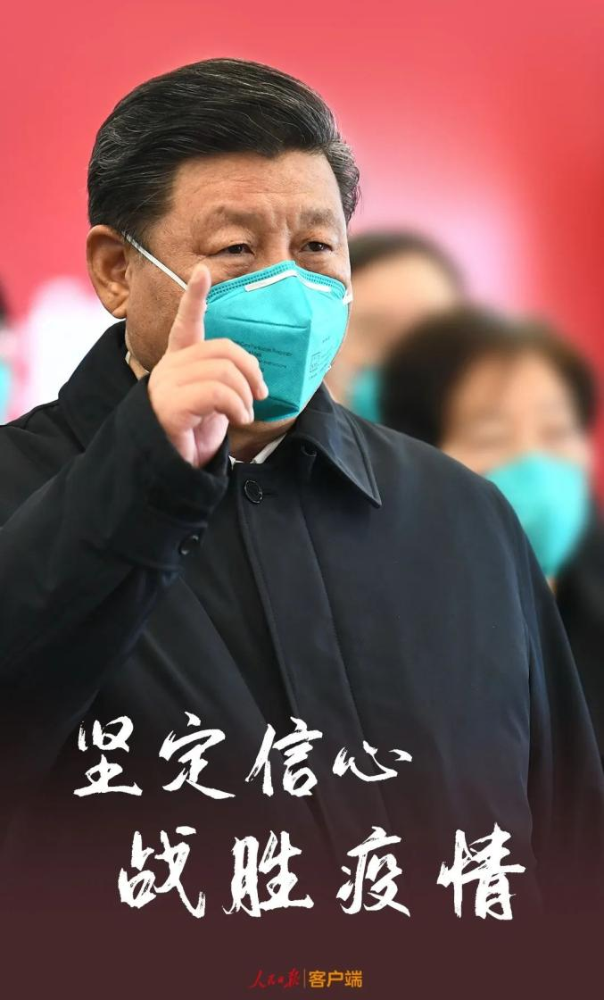

“武汉胜则湖北胜，湖北胜则全国胜。”打赢疫情防控的人民战争、总体战、阻击战，湖北和武汉是重中之重，更是决胜之地。
10日上午，习近平总书记乘飞机抵达湖北省武汉市，考察湖北和武汉新冠肺炎疫情防控工作，看望慰问奋战在一线的广大医务工作者、解放军指战员、社区工作者、公安干警、基层干部、下沉干部、志愿者和患者群众、社区居民。
战“疫”期间，习近平总书记十分关心武汉的疫情防控工作，时刻牵挂武汉人民，多次强调湖北省特别是武汉市的疫情防控在全国大局中的重要性和紧迫性，就驰援武汉、决胜湖北连续作出动员和部署。
一言一行，一举一动，体现了总书记对武汉的深切关怀。
心系武汉疫情——“坚决打好湖北保卫战、武汉保卫战”
岁末年初，一场来势汹汹的新冠肺炎疫情在武汉暴发，并向全国蔓延。
“救治”武汉，刻不容缓。1月7日，习近平总书记主持召开中央政治局常委会会议时，就对做好疫情防控工作提出了要求。1月20日，习近平专门就疫情防控工作作出重要指示。1月25日农历庚子年正月初一，习近平主持召开中央政治局常委会会议，专题研究疫情防控工作。会议决定，党中央向湖北等疫情严重地区派出指导组，推动有关地方全面加强防控一线工作。
正月初一以来，习近平先后6次主持召开中央政治局常委会会议。几乎每次会议都会专门提到武汉的疫情防控工作。“对进出武汉人员实行严格管控，坚决防止疫情扩散”“要紧紧扭住城乡社区防控和患者救治两个关键”“湖北省特别是武汉市依然是疫情防控的重中之重，要着力解决床位和医务人员等医疗资源不足问题”“要继续集中力量和资源，全面加强湖北省和武汉市疫情防控”……几次最高级会议部署再部署，因应疫情形势施策再施策，层层深入、步步推进，以更大的力度、更果断的措施，坚决把疫情扩散蔓延势头遏制住。
在以习近平同志为核心的党中央坚强领导下，一场防控新冠肺炎疫情的人民战争、总体战、阻击战迅速打响。全国上下闻令而动，一支又一支医疗队奔赴武汉，一批又一批医用物资涌向武汉，雷神山、火神山医院拔地而起，一座又一座方舱医院迅速改造完成……武汉，在全国各地的支持下，与时间赛跑，与病魔较量。
战“疫”，全国是一盘棋，而武汉，既是这盘棋上决定存亡的“棋眼”，也是决定胜败的“棋筋”，是全国疫情防控的主战场，是决战决胜之地。对此，习近平有着异常清醒的认识，他一针见血地指出：“武汉胜则湖北胜，湖北胜则全国胜。”在2月23日举行的统筹推进新冠肺炎疫情防控和经济社会发展工作部署会议上，习近平再作部署，“坚决打好湖北保卫战、武汉保卫战。”
心念医护人员——“用药如用兵，用医如用将”
战“疫”一线武汉，在这个没有硝烟的战场上，同样有流血牺牲、前仆后继。来自解放军、全国各地与当地的数万医护人员，舍生忘死日夜鏖战。他们的英勇壮举感动了全国，感动了世界。习近平一直深情地惦念着战“疫”一线的白衣天使们。
“用药如用兵，用医如用将。”多次重要会议上，习近平都语重心长地关心、问候奋战在疫情防控工作一线的医务工作者，向他们表达由衷的感谢和敬意。2月10日，在北京调研指导疫情防控工作时，习近平视频连线湖北武汉抗击肺炎疫情前线，给全国奋战在疫情防控一线的医务工作者和广大干部职工送去党中央的关怀和慰问。
习近平还专门作出重要指示，强调务必高度重视对他们的保护、关心、爱护
在统筹推进新冠肺炎疫情防控和经济社会发展工作部署会议上，习近平作出了一系列细致的安排：要关心关爱一线医务人员，落实防护物资、生活物资保障和防护措施，统筹安排轮休，加强心理疏导，落实工资待遇、临时性工作补助、卫生防疫津贴待遇，完善激励机制，帮助他们解除后顾之忧，使他们始终保持昂扬斗志、旺盛精力，持续健康投入抗疫斗争……让关爱医务人员政策细化，更加务实。
桩桩件件，细致入微，情意浓浓。
心念武汉人民——“武汉是英雄的城市”
生命重于泰山，习近平始终把人民群众生命安全和身体健康放在第一位。
武汉感染新冠肺炎的人数居全国首位。习近平非常关注患者救治情况，他反复强调，要提高收治率和治愈率、降低感染率和病亡率。
对于轻症患者，习近平指出，要继续加大救治力度，多渠道扩增收治床位，尽早实施医疗干预，尽可能让患者在轻症阶段得以治愈。对于重症患者，他强调，要加大重症患者救治力度，加快推广行之有效的诊疗方案，加强中西医结合，疗效明显的药物、先进管用的仪器设备都要优先用于救治重症患者。
自1月23日起，武汉关闭离汉通道，整个城市按下“暂停键”。武汉人民生活得怎么样，他们还有什么亟待解决的困难，习近平特别牵挂。
习近平关心武汉人民的“菜篮子”“米袋子”，他叮嘱，要密切监测市场供需动态，积极组织蔬菜和畜禽等生产，增加肉蛋奶等供给，畅通运输通道和物流配送，着重解决好生活必需品供应的“最后一公里”问题……衣食住行，无不挂心。
习近平关心奋战在一线的基层干部，号召党委和政府帮助他们解决实际困难，他指出，广大基层干部和深入基层的各级干部特别是湖北、武汉等疫情严重地区的干部群众连续作战，十分辛苦，各级党委和政府要多关心关爱他们，及时帮助他们解决遇到的实际困难和问题。
疫情发生后，武汉人民识大体、顾大局，克服疫情给务工、经营、就业、生活带来的种种困难，积极支持配合党委政府的各项防控措施。习近平对此满含敬意，他热情赞扬“武汉是英雄的城市，湖北人民、武汉人民是英雄的人民”。
一点一滴，满含着习近平对武汉人民的牵挂关怀；一桩一件，见证着总书记始终与人民心连心。
来源：人民日报、央视新闻、新华社